Situation n°2 CUB - Git¶
Auteur : Andy REMY
Date de création : 17/09/2025

Administration des systèmes¶
Partie 1 : Installation de l’environnement GIT¶
Question 2¶
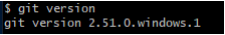
Nous voyons donc la version de git (2.51.0.windows.1)
Partie 2 : Initialisation de l’environnement GIT¶
Question 5¶
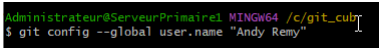
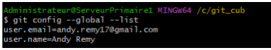
Nous venons de créer notre identité
Question 6¶

Nous avons créé un dossier “premierdepot”, nous sommes rentrés dedans puis nous avons initialisé ce dépôt.
Partie 3 : Gérer les versions (commits) en local¶
Question 7¶
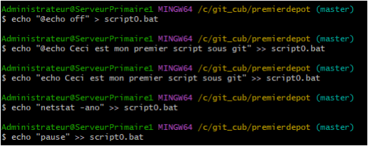
Nous venons de créer le premier script en .bat dans le dossier “premierdepot”
Question 8 et 9¶
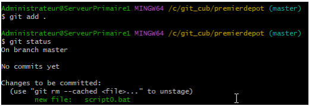
On a d’abord valider la première version du script, puis vérifier son status
Question 10 et 11 et 12¶
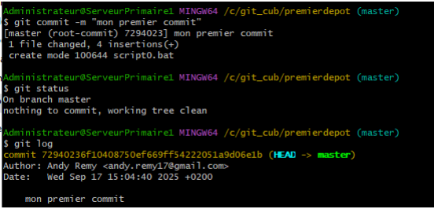
On a réalisé la 1er version (commit), vérifier le status puis lister les versions de notre dépôt
Question 13¶
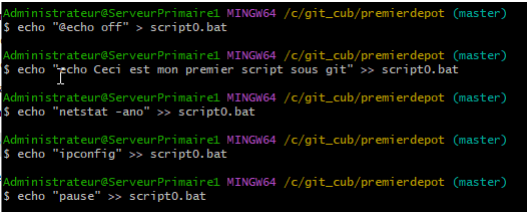
Nous avons réalisés la deuxième de notre script et enregistrer les modifications
Question 14¶
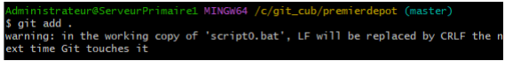
Nous venons de valider la deuxième version du script
Question 15¶
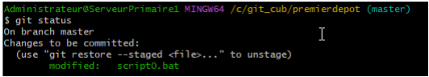
Nous avons vérifier le status de notre dépot
Question 16 et 17 et 18¶
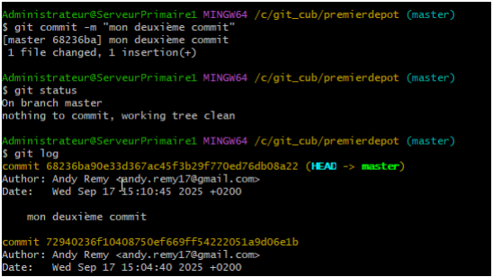
Nous avons réalisés la deuxième version (commit) de notre dépôt, puis vérifier le status à nouveau du dépôt et lister les versions (commits) du dépôt.
Question 19¶
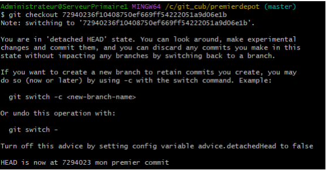
Nous sommes revenu à la version précédente du script donc la 1er.
Question 21¶
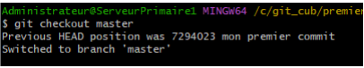
Nous sommes revenu à la dernière version du script donc la 2ème
Question 22¶
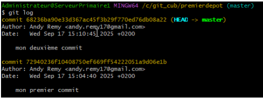
Nous avons listé les versions (commits) de notre dépôt
Partie 4 : Gérer les dépôts sur GitHub à distance¶
Tout d’abord, nous avons créé un dépôt “premierdepotgithub” directement sur nôtre compte GitHub.
Question 24¶
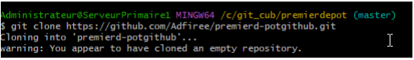
Nous avons ensuite clonés le .bat dans ce nouveau fichier créer en local
Question 25¶
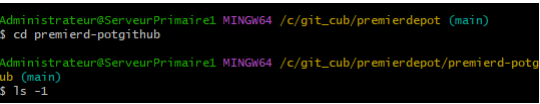
Nous avons vérifié le contenu du “premierdepotgithub”
Question 26¶
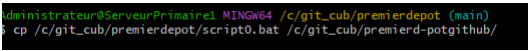
Nous avons copiés le script0.bat vers le nouveau dossiers “premierdepotguthub”
Question 27¶
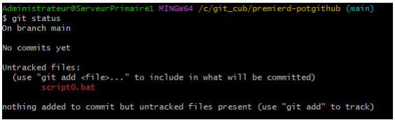
Nous avons vérifier le status du nouveau dépôt
Question 28¶
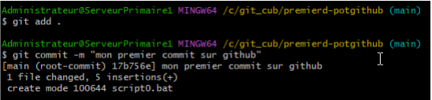
Nous avons réalisé la première version (commit) de notre dépôt.
Question 29¶
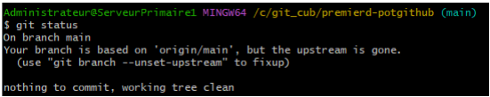
Nous avons vérifier le status du dépôt
Question 30¶
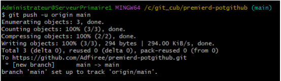
Nous avons poussé et validé le contenu de notre dépôt local vers le dépôt distant
Question 31¶
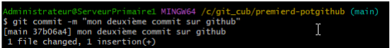
Nous avons réalisé la deuxième version (commit) de notre dépôt.
Question 32¶
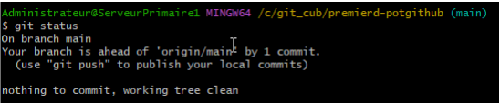
Nous avons vérifié à nouveau le statut
Question 33¶
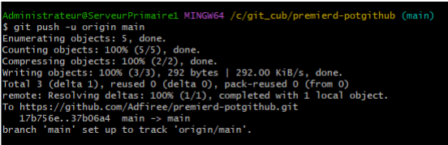
Pour finir, nous avons validé et poussé le contenu de notre dépôt local vers le dépôt distant.